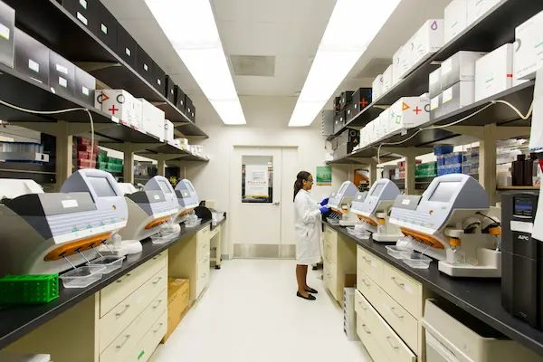
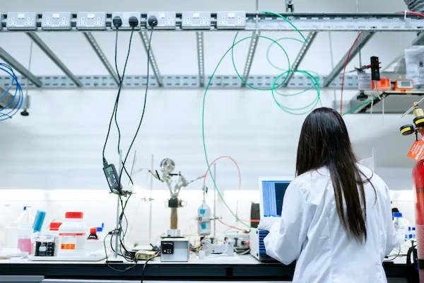
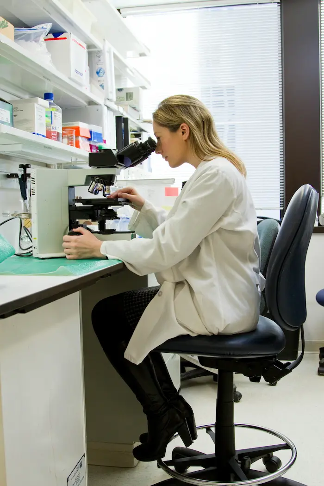

Centro analisi e diagnostica
HealthLab ti permette di prenotare online, ricevere i referti appena pronti e gestire ogni appuntamento dal tuo profilo — analisi cliniche, diagnostica strumentale, visite specialistiche e molto altro.


Chi siamo
HealthLab nasce come laboratorio di analisi cliniche con l'obiettivo di offrire un percorso diagnostico chiaro, efficiente e orientato alle esigenze del paziente. Nel corso degli anni abbiamo ampliato la nostra offerta, integrando alla diagnostica di laboratorio servizi di diagnostica strumentale, visite specialistiche e piccola chirurgia ambulatoriale.
Perché sceglierci
Dalla prenotazione al referto, gestisci tutto online in modo semplice e veloce. Un servizio accurato e affidabile, progettato per semplificare ogni passaggio e aiutarti a risparmiare tempo, senza rinunciare alla comodità.
Prenota quando vuoi, anche fuori dagli orari di sportello.
Caricati in piattaforma appena pronti, senza doverli ritirare di persona.
I tuoi dati sono al sicuro con noi.
Scegli la sede più comoda
per la tua prestazione sanitaria.
Per gli esami che lo richiedono, ti guidiamo nella prenotazione della visita preventiva.
Rivolgiti alla segreteria: può gestire, modificare o prenotare prestazioni sanitarie per te.

Il nostro processo
Sfoglia il catalogo per categoria: analisi, esami strumentali, visite specialistiche e molto altro.
Scegli data e ora tra quelli disponibili nella sede di tuo interesse.
Presentati in sede all'orario prenotato: nessuna attesa, nessuna fila.
Consulta e scarica il referto online, non appena è pronto.
I nostri servizi
Caricamento servizi…